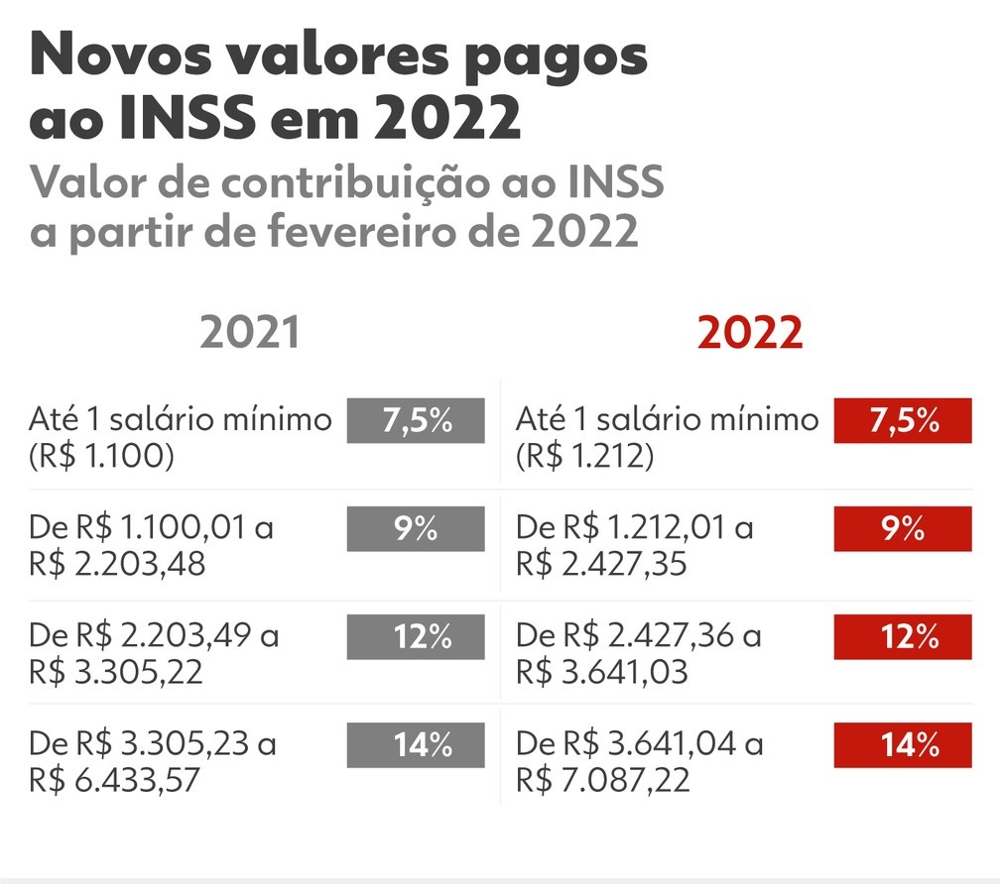

Noticias Cidades
Economia
Contribuição ao INSS muda em fevereiro: saiba quanto você vai pagar
Faixas de contribuição dos empregados com carteira assinada, domésticos e trabalhadores avulsos foram atualizadas para 2022; novos valores deverão ser recolhidos apenas em fevereiro.
O valor das contribuições dos trabalhadores ao Instituto Nacional do Seguro Social (INSS) vai mudar a partir de fevereiro. Com o reajuste do teto dos benefícios, de R$ 6.433,57 para R$ 7.087,22, foram atualizadas também as faixas de contribuição dos empregados com carteira assinada, domésticos e trabalhadores avulsos.
Com o reajuste de 10,16% pelo Índice Nacional de Preços ao Consumidor (INPC), quem ganha menos vai contribuir menos para o INSS, e quem ganha mais, vai contribuir mais.
Esses novos valores deverão ser recolhidos apenas em fevereiro, pois são relativos aos salários de janeiro. Os recolhimentos relativos aos salários de dezembro de 2021 e efetuados em janeiro deste ano ainda seguem a tabela anterior.
Quanto você vai pagar
Com a reforma da Previdência de 2019, as alíquotas de contribuição passaram a ser progressivas, ou seja, cobradas apenas sobre a parcela do salário que se enquadrar em cada faixa. Assim, se o trabalhador ganha mais de um salário mínimo, ele paga 7,5% de alíquota de contribuição sobre R$ 1.212 e outros percentuais no que exceder esse valor, de acordo com a tabela abaixo:
Por exemplo: um trabalhador que ganha R$ 1.500 pagará 7,5% sobre R$ 1.212 (R$ 90,90), mais 9% sobre os R$ 288 que excedem esse valor (R$ 25,90), totalizando R$ 116,82 de contribuição.
Já quem ganha R$ 4.500 terá a seguinte contribuição, seguindo as faixas de valores da tabela acima:
- Paga 7,5% sobre R$ 1.212: R$ 90,90 de contribuição;
- Mais 9% sobre R$ 1.215,35, que é a diferença de R$ 2.427,35 de R$ 1.212: R$ 109,38;
- Mais 12% sobre R$ 1.213,68, que é a diferença de R$ 3.641,03 de R$ 2.427,35: R$ 145,64;
- Mais 14% sobre R$ 858,97, que é a diferença de R$ 4.500,00 de R$ 3.641,03: R$ 120,26
- Total de contribuição: R$ 466,18.
Outras notícias do Brasil
-
Chuvas
O que as chuvas deste mês significam para os reservatórios e a conta de luz
-
Seca
Prejuízo com a seca nas lavouras sobe para R$ 25,6 bi e Paraná pede ajuda federal
-
Caminhões cegonha
DAF Caminhões Brasil começa a exportar veículos produzidos em Ponta
-
Fim do rodízio do PR
A Sanepar acertou ao decretar o fim do rodízio no abastecimento de água?